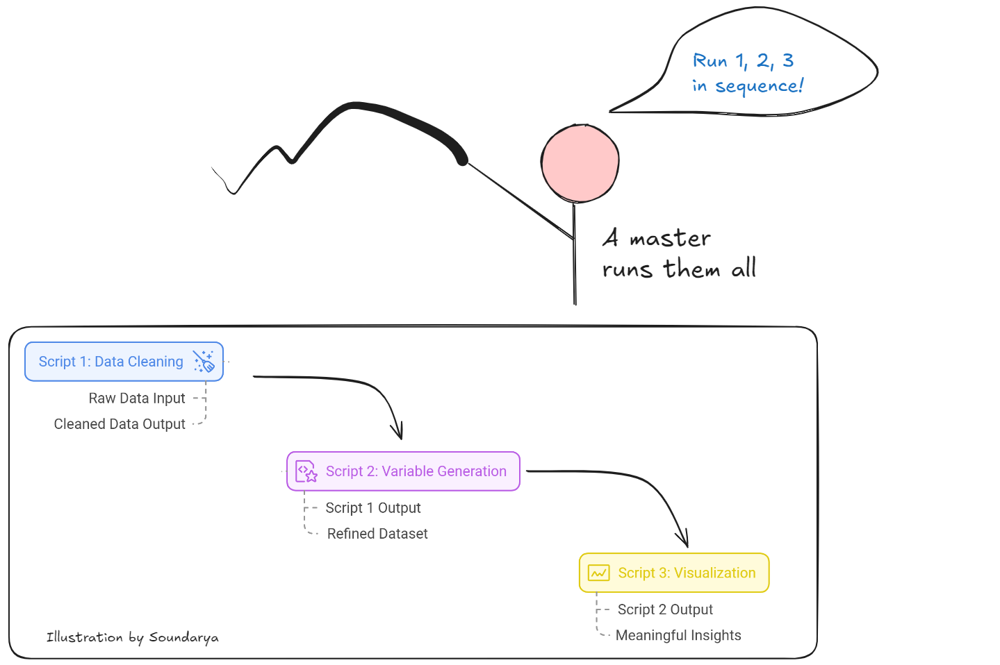

At 10.30 AM on a crucial workday, my mobile network suddenly went dark—zero connectivity. My heart raced since I needed that connection for… hmmm.. EVERYTHING. Eventually, we discovered that the outage affected the entire city, revealing a surprising vulnerability in our telecommunications infrastructure.
I had always assumed companies distribute mobile towers spatially, meaning a problem in one area would only affect a small region. However, this incident exposed a critical insight: one hub controlled all city networks. This realization was alarming because if something goes wrong at the hub, it cascades through the entire system, affecting millions of users simultaneously.
This experience taught me a valuable lesson about system dependencies and failure points—a lesson that directly applies to how we should approach data analysis. In fact, the parallels between telecommunications infrastructure and data workflows became increasingly clear as I examined my own analytical processes.
In my data analysis workflow, I use three interdependent scripts that function like a chain of command. Script 1 performs data cleaning, taking raw data and outputting a cleaned version. Building on this foundation, Script 2 generates new variables, taking Script 1’s output as its input and producing a more refined dataset. Finally, Script 3 creates visualizations, using the clean data from Script 2 to generate meaningful insights.
To coordinate these components, I have a master script that automates the execution of all these scripts sequentially—similar to a “hub” that coordinates all the mobile towers. While this workflow mirrors the mobile network’s centralized control system, I’ve implemented a crucial difference: unlike the mobile network’s workflow, I don’t solely rely on the master script. Even if something goes wrong, I can still manually run each script (1, 2, and 3) individually.
The real issue arises if one of these scripts or their outputs is missing, as this would break the sequence. To mitigate this risk, I’ve always ensured I store the outputs of Script 1, so Script 2 can proceed even if Script 1 is not re-run. Although this approach diverges from reproducibility principles, where data scientists typically discourage saving intermediate outputs and expect workflows to run seamlessly from start to finish, being prepared for unexpected failures has proven invaluable.
To protect my workflows, I implement three comprehensive strategies:
- Use a Master Script but Avoid Total Dependence
While I use a master script for efficiency, I never trust it blindly. Each script is self-contained, clearly indicating its start and end points. When an error occurs, the scripts halt with a message, allowing me to pinpoint where the problem happened. For example, if I see the “data cleaning is completed” prompt, I know the issue lies in the next step, so I can directly revisit Script 3. - Save Intermediate Outputs for Resilience
Although it deviates from strict reproducibility principles, I save intermediate outputs as safety nets. To maintain updated datasets, I still run the master script to regenerate intermediates when raw data changes. This ensures consistency while providing a fallback option if the master script fails. - Backup Raw Data in Multiple Locations
I maintain backups of raw data in three different locations, ensuring I’m not left stranded in case of data loss or corruption.

Just as a city’s mobile network relies on a central hub, many data analysis workflows depend on critical sequential steps. This vulnerability brings me to Murphy’s Law: Anything that can go wrong will go wrong. By embracing this mindset, we can better protect our analyses through careful preparation. The key questions become: Are we prepared if something fails? Do we have backups? Have we stored critical outputs in multiple locations? Addressing these concerns proactively often helps avoid disaster.
Thinking through these potential pitfalls before starting an analysis ensures preparedness. Once a solid plan is in place, it can serve as a template for future projects. The ultimate question remains: Are you prepared for when things go wrong?